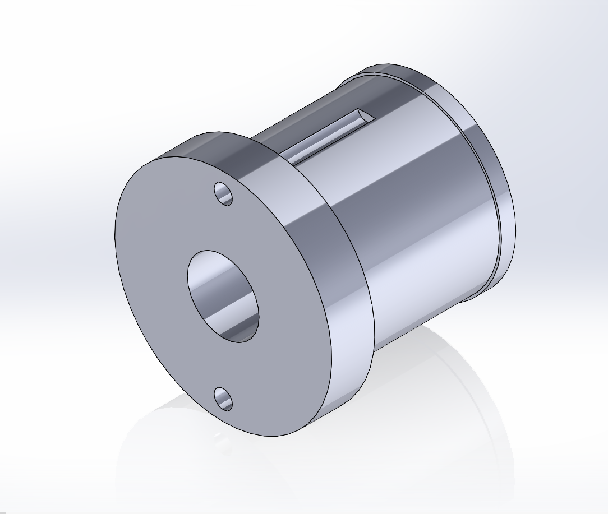
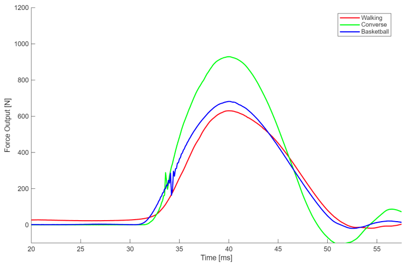
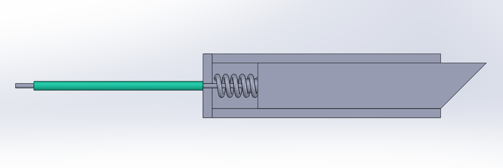

Carbon Fiber Pushrod Development
Designed and tested bonded composite–metal interface for suspension system
→ Identified adhesion as primary failure mode through tensile & compression testing
ANSYS • Instron • Composite Manufacturing

Vortex Generator Aerodynamics Study
Investigated placement of vortex generators to delay boundary layer separation
→ Evaluated drag reduction across multiple configurations in wind tunnel testing
Wind Tunnel • Pressure Measurement • Flow Analysis

Impulse Response Testing
Measured force response of materials using strain gauges and data acquisition
→ Characterized dynamic loading behavior across test samples
LabVIEW • Strain Gauges • Signal Processing

Safety Locking Mechanism
Redesigned mechanical locking system for improved manufacturability and safety
→ Increased reliability under load and simplified fabrication
CAD • Mechanical Design • Prototyping